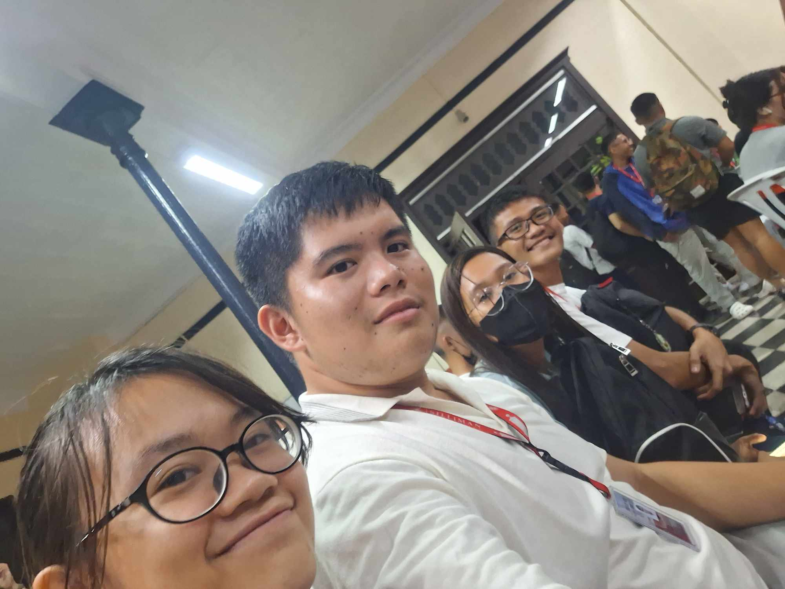
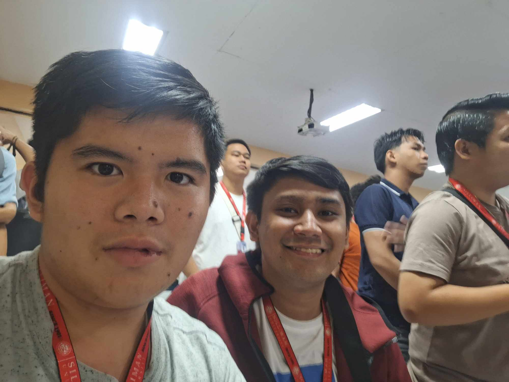
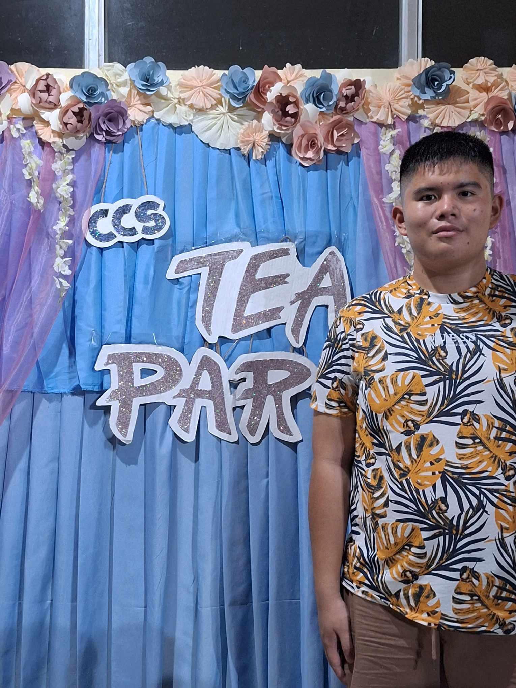

This is a project meant for the keepsake of the professor handling GE10 of the College of Computer Studies (CCS). Professor: Prof. Joy Dy Student: Randolph Vince Y. Bomediano
CHURCH
REFLECTION: Months after graduating from the School of Don Bosco, I have decided to come to their sunday mass hence I have nothing to do that weekend. The Reading of Faith had a strong message of trying to balance faith in the busy life of human cycles.
REFLECTION: In our Reading of the Herbrew Scriptures Subject (CHS 1), We are tasked to attend a concert as a requirement for our course subject. The songs played were a lively tune which is also having a good touch of religious messages and leitmotifs that are used in the concert.
REFLECTION: The Siliman University Church had come to the CCS Department to kickstart the Founders Week festivities. For the first time, the people ahndling the said event were reather experienced with interactive praise and worship which made me feel lighter after a good singing in the devotion mass. Starting the school year with such activity was the best thing to happen.
REFLECTION: The History and Culture Talk event was a event for everyone to have their wonders and inquisitivities answered by the speakers on stage. We learned of religious factions and sacraments that transcended in the past. Some are even linked with the Silimanians that first came here as part of the 5 C's.
CLASSROOM
REFLECTION: Day Three of the Founders week from CCS and we have a talk with an Alumni who showed us the advantage of using Strategies. First was the need for the importance of Carity. Second was the tool for evaluation which is Data. Last was need for Flexibility in the marketing grounds. The lessons needed for anyone in the business field while studying computers.
REFLECTION: First working for a committee that involves everyone present for the founders day activity. While working it taught us about when organizing events, we are to be sure to have everyone present and accounted for.

REFLECTION: The making for the Floats Props and decorations was a good activity for the creative and the contributive. As the CCS theme would be the greeks touched with some astrology of the solar system, we are all tasked to paint big balls to represent the planets.
REFLECTION: We were given a talk by some experienced techology entrepenuers. They gave us some insights on what working in the tech field would do and the wisdom gained from the experience of doing so. The tech experts taught us that the road ahead would not be easy but we must fight to see better days of our experience.
REFLECTION: The Campus Wide Orientation was a must need to watch by the whole campus. Wile it goes on, students who could not secure a seat at luce could stay in their college general rooms. It went on about the general knowledge of the school, it's features, and it's history, giving everyone a nod to be curious about the place.
COURT
REFLECTION: As a spectator who was also running during the campaign days, I made my name known during the championships when Don Salvador won. Positive Pride is what keeps the ball rolling as Purok Don Salvador won the Tinaogan Basketball Championship.

REFLECTION: As the SK Federated, we were to prepare for the sportsfest planned by the Sangguniang Bayan of Bindoy. So as the federated president of Bindoy, I gave out my share via sports equipment to the barangays that are in need of training and posrts equipment not just limited to tournaments but as a method of physical fitness and livelihood for the communities within Bindoy.

REFLECTION: The Siliman Intramurals had a kick start and the smell of the game fills the air. Each college were to all compete in sports that all must witness as the victor would give the said winner no prize but the prize of fame. And althought te victory isnt the priority, everyone had a blast in the field of fun and sportsmanship.
CULTURE
REFLECTION: The Buglasan Parade happened and the numerous colorful performances of different schools showed at the front of the campus leading to the city proper. A humble reminder that the province-wide event has just began with the parade frolics, giving a sense of joy to the public watching the beautiful scene.
REFLECTION: The Speech Competition organized by the Reserve Marine Corps was made to showcase the leadership definition by the many comapnies. Leadership and Strive were the key topics to each speech and each talk the company representatives gave out to the crowd. The concept of freedom was also discussed about in the event, which many, including myself, all wallowed in, making us realize how important it is regarding of the ROTC program given by the school.
REFLECTION: The Hibalag Festival really showed us the beauty and potential of Siliman's Culture circle within the campus. Aside from the numerous booths by outside sponsors, there are also booths made by the councils and colleges of the campus to showcase their expertise and skill.
REFLECTION: The campus tour activity was sure to give the studnets a good run down on how the place works. After such we are give the same activity with the said group working on each area. The activity tested our knowledge on how much we know about the place with the information relayed to us by our tour guides.
COMMUNITY
REFLECTION: The Christmas Party was the first one I had with my CCS Buddies. With the party, I met new friends, get to know better my old friends' talents, witness many things to happen with the CCS Community, jam out with the college. The night was a blast.
REFLECTION: With the task to become the chairman of the SK Council of Tinaogan, me and my kagawad are in an ordeal to campaign the community for their support. It made me realize the numerous people that are there in Tinaogan and the need for people to lead the barangay.
REFLECTION: The CCS Tea Party was a blast as a way to kickstart the 1st semester of the 2023-2024 school year. Meeting many people who share my interests makes my heart open more as socializing there was a great thing to make new friendships arise.
REFLECTION: The Siliman Parade starts and it was the first time I would see it as a student. With old friends from my elementary days, we gaze our eyes onto the rallying street performers and floats made my numerous colleges. As a former CCS student, our theme of Space-Trojans really caught some peoples' eyes but regardless the event was spectacular.
REFLECTION: NSTP1 was at it's last days before the break and NSTP2 and while we are ending the program with a bang, we had a fun run from the ballfield to the campus and back. Bonds were stronger with each platoon and company after and before the run.
REFLECTION: After the Barangay Officials got elected, we move to the Municipal/City level which is the Federated. And with my proficiency and willingness, I managed to take the role as SK Federated President of Bindoy. It may have intercepted my life as a Silimanian Student but that serves no excuse to stop serving both.